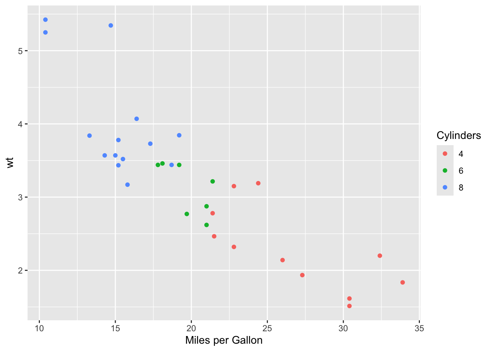
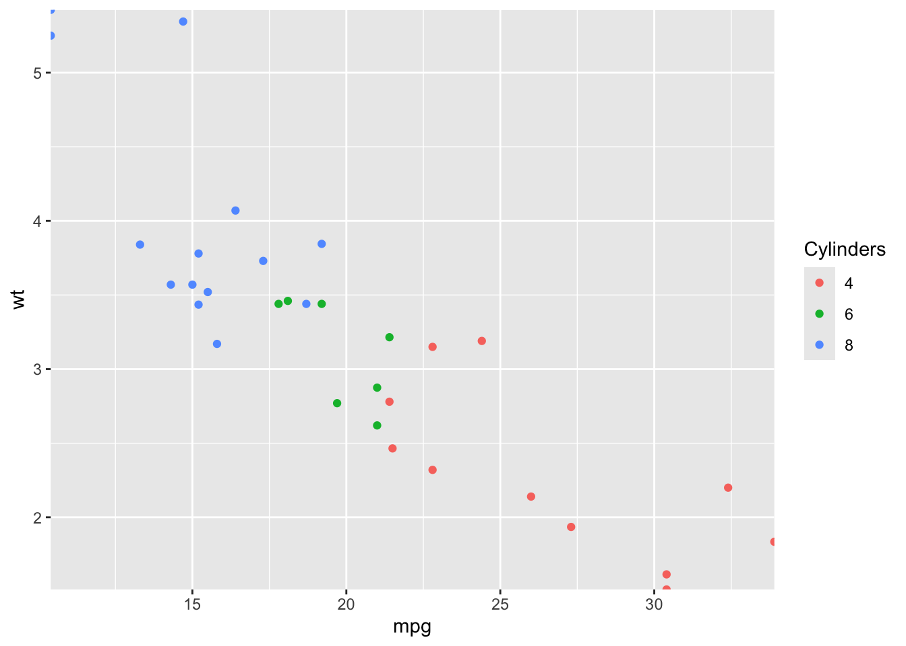
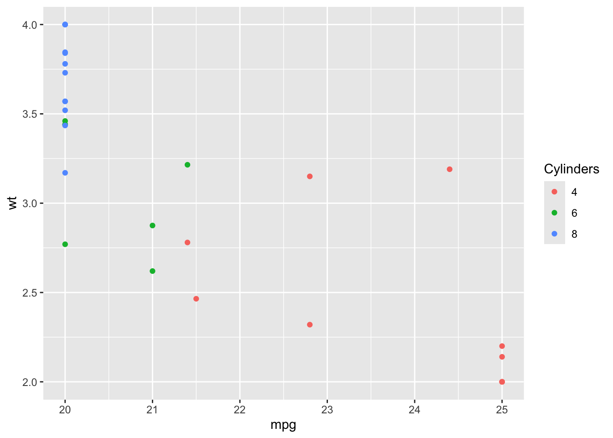

library(ggplot2)
# convert number of cylinders to factor (only 3 levels)
mtcars$Cylinders <- as.factor(mtcars$cyl)
p <- ggplot(mtcars) +
aes(mpg, wt) +
geom_point(aes(color=Cylinders))
pTutorial 2
Scale specification
While geoms represent visual objects (points, lines…), a scale is a procedure that actually performs the mapping of data attributes into the properties of those visual objects (position, color, size…). On the other hand, a guide is a visual cue that allows us to perform the inverse procedure: converting their properties back to data.
In the example above, two position scales (x and y)
detected that the data (
mpgandwt) is continuous;set proper limits to the axes according to the range of data values;
assigned a position in the chart space to each point according to such coordinates;
added the corresponding guides to the axes, including
nicely and evenly spaced breaks, with tick marks and labels,
centered axis labels with the name of the variables.
Additionally, a color scale
detected that the data (
Cylinders) is discrete (a categorical variable, a factor);assigned a color to each category following a default hue-based scale;
added the corresponding guide to the legend, including
set of keys (colors),
set of labels (categories in the data),
legend title with the name of the variable.
In other words, the plot above is equivalent to the following:
p +
scale_x_continuous() +
scale_y_continuous() +
scale_color_discrete()
The last three instructions are just inferred from the data and automatically added. We will only need to specify the scales manually whenever we want to override any of the defaults provided.
There are three fundamental scale types:
continuous, for numerical quantities;
discrete, for categorical variables;
binned, which is a special type for numerical quantities that first discretize the data.
Based on these, the fundamental scales, in general, are constructed as follows:
scale_<aes>_<type>()For example:
For aesthetic
xand a continuous variable:scale_x_continuous().For aesthetic
colorand a categorical variable:scale_color_discrete().
Then there are a bunch of special scales that are shortcuts for specific common tasks, such as scale_x_log10(), which is a continuous scale that also applies a logarithmic transformation, or scale_color_brewer(), which provides a bunch of discrete color schemes from ColorBrewer.
Checkpoint 1
- Take the first example and assign the original
cylvariable to color instead ofCylinders. What happens? Why? What is the scale function that is being applied here? What happens if we try to forcescale_color_discrete()in this setting? Why?
library(ggplot2)
# convert number of cylinders to factor (only 3 levels)
mtcars$Cylinders <- as.factor(mtcars$cyl)
p <- ggplot(mtcars) +
aes(mpg, wt) +
geom_point(aes(color=cyl)) +
scale_color_discrete()
pIt first creates a blue-scale color scheme, then renders an error, and then tells me I am applying a continuous value to a discrete scale.
Read the documentation for
scale_x_continuous(). How can you change the name of the axis? What happens if we manually specify the same scale twice (try adding different names)? Why?How can you change the position of the axes?
Scale names
As you may have discovered in the previous section, all scales have a name argument that is used for the axis label (for position scales) or legend title (for other scales), and which by default prints the name of the variable. There is however a shortcut, a more direct way of setting these labels, via the labs() function.
p +
labs(
x = "Fuel consumption in miles per gallon",
y = "Weight in thousands of pounds",
color = "Number of cylinders"
)
In these strings, you can use \n to insert a line break, but you can also supply mathematical expressions and other formatting options wrapped in quote(). See ?plotmath for documentation on which expressions can be used and how they are interpreted.
x <- seq(from = -2, to = 2, by = .01)
ggplot(data.frame(x=x, y=x^3)) +
aes(x, y) +
geom_path() +
labs(y = quote(f(x) == x^3))
Checkpoint 2
How can you remove an axis label, or a legend title?
Read the documentation for
labs(). Investigate what other labels, apart from the aesthetics, can be set with this function. Experiment with them.Read the documentation for
?plotmath. How can you set a title with some words in bold, others in italics…? How can you wrap a very long subtitle with line breaks?
Limits
Scale limits are the region of the data space in which the mapping is defined: for continuous variables, ggplot2 defaults to the range() of the data; for categorical variables, it is just a discrete set of categories. However, you may have noticed that the limits of the axes extend a little bit past the range of the data. This is to ensure that the visual marks do not collide with the axes.
# compare
range(mtcars$mpg)[1] 10.4 33.9range(mtcars$wt)[1] 1.513 5.424# with the limits in
p
Sometimes, this automatic expansion is not desirable. It can be modified by providing an expansion() to the scales’ expand argument. E.g., to remove any expansion:
p +
scale_x_continuous(expand=expansion(0)) +
scale_y_continuous(expand=expansion(0))
This is often useful for maps and other area-based plots, but not so much for scatterplots, since it hides some points.
As with the name, all scales have a limits argument that can be used to change this default behavior, e.g. to increase the range for continuous variables, or to include some category that is not in our data for categorical variables. And again, this is also so common that there is a shortcut via the lims() function.
p +
lims(
x = c(0, 50),
y = c(0, 10),
color = factor(c(2, 4, 6, 8, 10))
)In the plot above we increased the limits, but what happens if we try to “zoom-in”?, if we specify a range that leaves “out of bounds” (oob) values falling outside these limits?
p +
lims(
x = c(20, 25),
y = c(2, 4)
)Warning: Removed 24 rows containing missing values or values outside the scale range
(`geom_point()`).As you can see, the default behavior is to censor (by assigning a NA) those out-of-bounds values. Scales have an oob argument to modify this behavior, which default to scales::oob_censor.
p +
scale_x_continuous(limits=c(20, 25), oob=scales::oob_censor) +
scale_y_continuous(limits=c(2, 4), oob=scales::oob_censor)Warning: Removed 24 rows containing missing values or values outside the scale range
(`geom_point()`).Checkpoint 3
Take the last example and add a
geom_smooth()layer. What is the difference between applying the defaultscales::oob_censor,scales::oob_squishandscales::oob_keepto the position scales?What happens if you provide a set of levels to the limits of the color scale that does not contain any of the categories present in the data?
Breaks and labels
When ggplot2’s algorithm to infer the appropriate number of tick marks for axes and legends fails, we can give it a hint using the n.breaks argument.
p +
scale_x_continuous(n.breaks=4)
If that is not good enough for our purposes, another option is to use the breaks argument (maybe in conjunction with minor_breaks) to explicitly set which ones we want.
p +
scale_x_continuous(breaks=c(10, 15, 30, 40), minor_breaks=c(20, 25))
Note that the last break, 40, is not shown because it is out of range.
Additionally, another common task is to tune the label assigned to each break. This can be accomplished with the labels argument. We can set anything as labels, but these must match the number of breaks, so it is best to specify both at the same time.
p +
scale_x_continuous(breaks=c(10, 15, 30), labels=c("ten", "fifteen", "thirty"))Helper functions scales::label_*() allow us to format the breaks following some pattern.
p +
scale_y_continuous(labels=scales::label_number(suffix="k"))
In the previous example, we added “k” to indicate that the weight is in thousands of pounds. Other useful functions are scales::label_percent() to format numbers between 0 and 1 as percentages, or scales::label_dollar() to format numbers as currencies.
Checkpoint 4
- Modify the breaks and labels for the color scale in the previous plot. What happens if a category present in the data is dropped compared to what happens for the
limitsargument?
Guides
So far we have been talking about scale names, breaks and labels, but they are really properties of the guides, axes and legends, which are the visual cues that allows us to interpret the visual objects and transform them back into data. Guides can be set, unset or fine-tuned using the guide argument, or via the special function guides(), which works similarly to labs() and lims().
p +
guides(
x = guide_axis(position="top", angle=45),
color = guide_legend(reverse=TRUE)
)See ?guide_axis, ?guide_legend and the more specific ?guide_colorbar for more options.
Transformations
Scale transformations are specified using the trans argument. They transform the mapping without transforming the data. The most common use case is to adjust a continuous scale using some non-linear transformation to emphasize some values in the data that are hard to see in linear scale.
p +
scale_x_continuous(trans="log10")
Some common transformations, such as the logarithmic scale, have dedicated functions.
p +
scale_x_log10()Checkpoint 5
Compare the last example with
ggplot(mtcars) + aes(log10(mpg), wt) + geom_point(aes(color=Cylinders)). What are the differences? Why?Read the documentation for
scale_x_continuous()and investigate how to do this. What is the default transformation? What does the"reverse"transformation do?